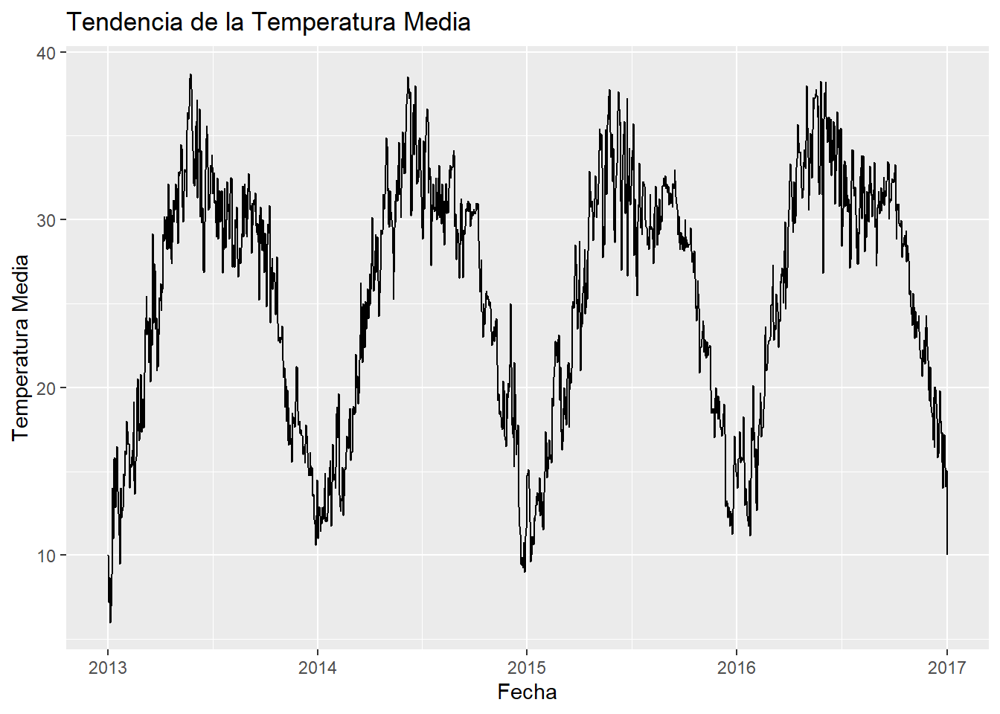
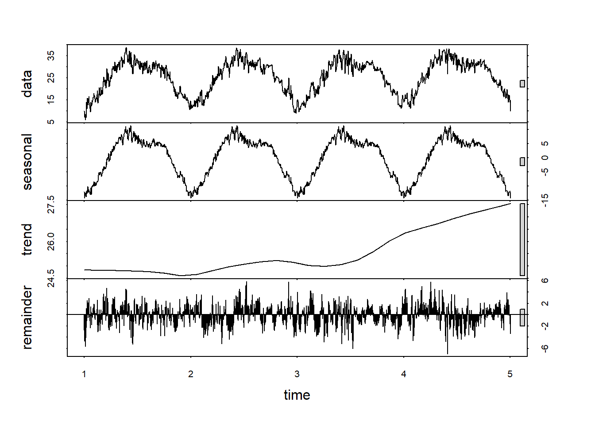
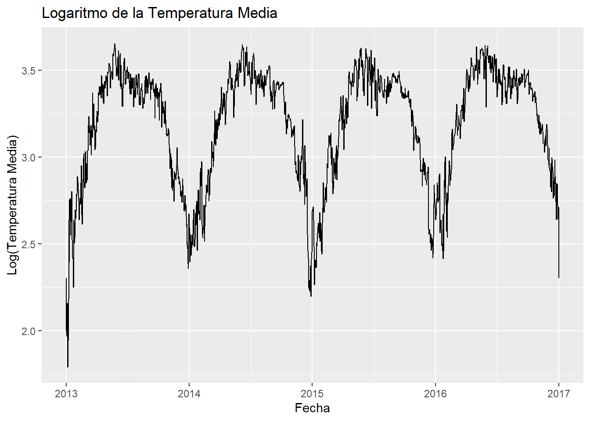
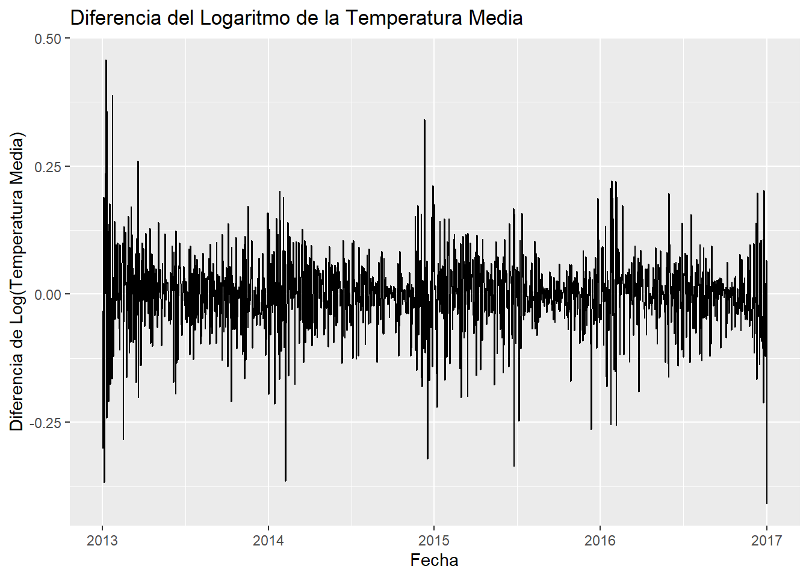

Chapter 4 Unidad 3
4.1 Análisis Visual y Descomposición de la Serie Temporal
Visualización inicial
Utilizamos gráficos de líneas para obtener una vista preliminar de los datos. Esto ayudará a identificar visualmente tendencias y ciclos.
ggplot(data, aes(x = date, y = meantemp)) +
geom_line() +
labs(title = "Tendencia de la Temperatura Media", x = "Fecha", y = "Temperatura Media") La visualización inicial de la tendencia de la temperatura media muestra la variabilidad y los patrones estacionales a lo largo del tiempo. Este gráfico ilustra la oscilación de las temperaturas a través de las estaciones, con picos durante los meses de verano y valles en los meses de invierno, lo que indica una fuerte estacionalidad en los datos. Además, la serie muestra fluctuaciones dentro de cada temporada que podrían estar influenciadas por factores meteorológicos adicionales.
Estacionalidad: Los picos y valles recurrentes a lo largo de los años demuestran la influencia de las estaciones en la temperatura media. Esto es típico de las regiones que experimentan variaciones climáticas significativas a lo largo del año.
Variabilidad: La variabilidad en las temperaturas también puede sugerir la influencia de fenómenos climáticos más cortos como olas de calor o frentes fríos.
Descomposición
## Warning: package 'forecast' was built under R version 4.2.3## Registered S3 method overwritten by 'quantmod':
## method from
## as.zoo.data.frame zoots_data <- ts(data$meantemp, frequency = 365) # Ajusta la frecuencia
# Aplicar STL
result_stl <- stl(ts_data, s.window = "periodic")
plot(result_stl) Componente de Datos: La gráfica superior muestra la serie temporal original, que es crucial para visualizar cómo la temperatura fluctúa a lo largo del tiempo.
Componente Estacional: Este componente destaca la estacionalidad regular y predecible en la serie temporal, reflejando los patrones estacionales típicos que se repiten anualmente. Es vital para comprender cómo las temperaturas cambian con las estaciones.
Componente de Tendencia: La tendencia muestra un incremento gradual a lo largo del tiempo, sugiriendo un aumento en las temperaturas medias que podría ser de interés para estudios sobre el clima y el medio ambiente. Esta tendencia ascendente podría indicar un calentamiento a largo plazo en la región estudiada.
Componente de Residuo: Los residuos representan la variabilidad aleatoria que no es explicada por los patrones estacionales ni por la tendencia. Estos son relativamente pequeños y aleatorios, lo que sugiere que los componentes de estacionalidad y tendencia están capturando bien las dinámicas principales de la serie temporal.
4.2 Verificación de estacionareidad
Determinamos si la serie temporal es estacionaria
Prueba de Dickey-Fuller Aumentada (ADF): Una prueba estadística para verificar la presencia de una raíz unitaria, indicativo de no estacionariedad.
##
## Augmented Dickey-Fuller Test
##
## data: data$meantemp
## Dickey-Fuller = -1.8526, Lag order = 11, p-value = 0.6407
## alternative hypothesis: stationaryAnálisis Resultados:
Dickey-Fuller = -1.8526: Este valor por sí solo no es suficiente para rechazar la hipótesis nula sin considerar el p-valor asociado.
p-valor = 0.6407: Al ser un p-valor alto, confirma que la serie temporal tiene una tendencia estocástica o una raíz unitaria, indicando que la serie es no estacionaria.
Implicaciones de la No Estacionariedad
La no estacionariedad en la serie temporal puede presentar desafíos significativos para el análisis y la predicción porque los modelos estadísticos y de machine learning que asumen estacionariedad pueden dar resultados engañosos o inexactos cuando se aplican a datos no estacionarios, ademas la variabilidad en la media y la varianza a lo largo del tiempo puede afectar la precisión de las predicciones a largo plazo.
Para abordar la no estacionariedad y hacer la serie temporal adecuada para análisis y modelado predictivonos vemos en la necesidad de aplicar transformaciones a la serie temporal de la temperatura media para controlar la tendencia y la variabilidad.
Transformación Logarítmica y Visualización
# Transformación Logarítmica
data$log_meantemp <- log(data$meantemp)
# Visualización de la serie logarítmica
ggplot(data, aes(x = date, y = log_meantemp)) +
geom_line() +
labs(title = "Logaritmo de la Temperatura Media", x = "Fecha", y = "Log(Temperatura Media)")
Diferenciación y Visualización
# Calcular la diferenciación logarítmica y eliminar la primera fila para mantener la consistencia de datos
diff_series <- diff(data$log_meantemp)
data <- data[-1, ] # Elimina la primera fila
data$diff_log_meantemp <- diff_series
# Visualización de la serie diferenciada
ggplot(data, aes(x = date, y = diff_log_meantemp)) +
geom_line() +
labs(title = "Diferencia del Logaritmo de la Temperatura Media", x = "Fecha", y = "Diferencia de Log(Temperatura Media)")
Reevaluar la Estacionariedad
# Prueba ADF en la serie transformada y diferenciada
adf_result_transformed <- adf.test(data$diff_log_meantemp, alternative = "stationary")## Warning in adf.test(data$diff_log_meantemp, alternative = "stationary"):
## p-value smaller than printed p-value##
## Augmented Dickey-Fuller Test
##
## data: data$diff_log_meantemp
## Dickey-Fuller = -13.915, Lag order = 11, p-value = 0.01
## alternative hypothesis: stationaryResultados de la Prueba ADF
Dickey-Fuller = -13.915: Este valor es mucho más negativo que en la prueba anterior sin diferenciar, lo que indica una fuerte evidencia en contra de la hipótesis nula de presencia de una raíz unitaria. p-valor = 0.01: Este p-valor es significativamente bajo y sugiere que la hipótesis nula de no estacionariedad puede ser rechazada con un nivel de confianza del 99%.
El p-valor bajo y el valor crítico altamente negativo implican que la serie diferenciada y logarítmicamente transformada de la temperatura media ahora es estacionaria. Esto significa que la serie no presenta tendencias o patrones estacionales que dependan del tiempo, lo cual es crucial para el análisis de series temporales y el modelado predictivo.